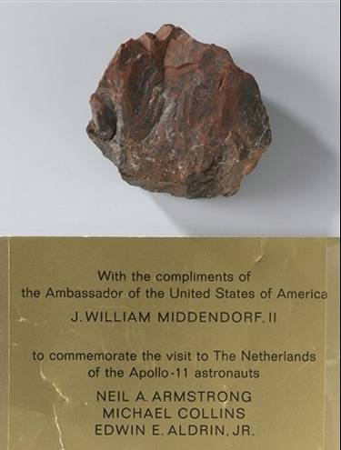

a origem
A ida à Lua tem origem no programa Apollo da NASA, que se iniciou na década de 1960. O objetivo era enviar um homem à Lua e fazê-lo retornar em segurança.
o cinturão de van allen?
O cinturão de Van Allen é uma área de extrema radiação. Ao viajar para a Lua, os astronautas tiveram que passar necessariamente por esse cinturão. Mas o que me deixa curioso é que Alan Bean, o quarto homem a pisar na Lua, em uma entrevista, deixou claro que desconhecia a existência dessa área de extrema radiação.
a torre de babel ou foguete?
Sabemos que o objetivo da Torre de Babel era tocar os céus; sendo assim, nada seria impossível para aqueles que realizassem tais feitos. Então, Deus derramou sua ira sobre quem o tentasse e os destruiu. Você se diz cristão? Acredita na Bíblia e na NASA ao mesmo tempo? Saiba que a NASA tem o mesmo objetivo da Torre de Babel: 'tocar os céus'.
Hoje em dia, os foguetes têm diversos problemas. Além do custo de 15 milhões de dólares para um foguete, há também o fato de que, quando um desses foguetes chega a uma certa altura, o foguete original é substituído por um de CGI, sem mostrar o destino final.
voltaremos a lua e além
Não é de hoje que pessoas vêm a público para dizer que voltaremos à Lua e até além dela. Donald Trump, Mike Pence e George W. Bush são políticos muito influentes em nosso mundo. Esses políticos citados fizeram promessas, promessas essas que até os dias de hoje não foram cumpridas. O plano era voltar à Lua e desenvolver uma base lunar para que pudessem criar uma tecnologia que levasse astronautas americanos ainda mais longe. Nos discursos desses políticos, é utilizado um papel com cada palavra que saía de suas bocas naquele momento. No final desses discursos, eles sempre terminam com a mesma frase: "e além". Isso me lembra aquele filme da Disney, "Marte e Além". Mais uma vez, a Disney, ou melhor, Walt Disney, no meio de toda a bagunça.
Peggy Whitson 666
Peggy Whitson é uma astronauta norte-americana e bioquímica. Ela é conhecida por ser a primeira mulher a comandar a Estação Espacial Internacional (ISS) duas vezes e por ter passado mais tempo no espaço do que qualquer outro astronauta da NASA. Whitson também foi a primeira mulher a se tornar chefe do escritório de astronautas da NASA. Ela bateu o recorde de maior tempo no espaço, com um total de 666 dias. O número 666 é frequentemente visto como um símbolo de oposição a Deus ou uma marca do Anticristo. Coincidência? Acho que não.
qual o objetivo disso?
O maior parasita é uma ideia, algo que se espalha rápido. Uma vez que uma ideia entra no seu cérebro, é quase impossível contradizê-la, especialmente se estiver totalmente formada e compreendida, mesmo que não seja verdadeira. O objetivo é fazer uma espécie de lavagem cerebral baseada nessa descrição, um processo de convencimento que começa nos primeiros anos de sua vida, para que, no futuro, quando estiver adulto, você acredite e a defenda, mesmo sem conhecer ou ter a verdade ao seu lado.
pedra da lua
Uma pedra lunar trazida da Lua foi parar em um museu. Mais tarde, descobriu-se que essa pedra era, na verdade, madeira petrificada.
Conspiracionistas
Caso você, leitor, tenha compreendido a verdade e não veja a hora de contar para seus colegas, pais e professores, sinto dizer, mas você será chamado de conspiracionista e de louco. Mesmo que você mostre evidências e provas da farsa, não terá sucesso no processo de convencimento. Isso ocorre porque a grande massa populacional não está nem aí para a verdade, eles já foram contagiados pelas mentiras do mundo. afinal quem gosta de ouvir a dura verdade?

são todos pagãos
Não é de hoje que as pessoas vêm adorando os astros. Desde a antiguidade, os astros eram considerados deuses e frequentemente adorados. Em Gênesis 1:14-19, é claramente especificado o propósito da Lua. Tanto o Sol quanto a Lua foram criados para servir de luminárias, para separar o dia da noite, e não para serem habitados e colonizados.
Abaixo, observe uma lista dos povos com conexão paga em suas culturas.
- Celtas: Os celtas associavam a Lua à deusa Cerridwen, que simbolizava transformação, sabedoria e conhecimento. Eles usavam o ciclo lunar para marcar o tempo e realizar rituais, principalmente durante a Lua Cheia e a Lua Nova.
- Nórdicos (Escandinavos): Os nórdicos viam a Lua como o deus Máni, irmão da deusa do Sol, Sól. Ele conduzia a carruagem lunar pelo céu, e a Lua era importante para marcar eventos como o tempo de plantio e colheita.
- Romanos e Gregos Antigos: Os romanos e gregos antigos associavam a Lua às deusas Ártemis (grega) e Diana (romana), ligadas à caça e à virgindade. A Lua era central em rituais de purificação e invocação durante a Lua Cheia.
- Maias: Os maias viam a Lua como a deusa Ix Chel, associada à fertilidade, saúde e medicina. O ciclo lunar era usado para guiar a agricultura e marcar os tempos de semeadura e colheita.
- Egípcios Antigos: Os egípcios antigos associavam a Lua ao deus Thoth, ligado à sabedoria e à escrita. A Lua era fundamental nos rituais de calendário e no culto de Osíris, simbolizando o renascimento.
- Babilônios: Os babilônios veneravam Sin (ou Nanna), o deus da Lua, como um dos principais deuses do panteão. A Lua regulava o calendário babilônico, e Sin era reverenciado com rituais específicos durante a Lua Nova e Lua Cheia.
- Hindus: Os hindus associavam a Lua ao deus Chandra, que também estava ligado ao tempo e à fertilidade. A Lua tem um papel importante no calendário hindu e em festivais como o Karva Chauth.
- Chineses Antigos: Os chineses antigos veneravam Chang'e, a deusa da Lua, que vive na Lua após beber o elixir da imortalidade. O Festival da Lua celebra Chang'e e a abundância de colheitas.
- Aborígenes Australianos: Em várias culturas aborígenes australianas, a Lua era vista como um ancestral ou entidade masculina que influenciava a caça e a vida. Eles usavam o ciclo lunar para guiar práticas de caça e pesca, além de rituais de passagem.
- Incas: Os incas associavam a Lua à deusa Mama Quilla, irmã e esposa do deus Sol, Inti. A Lua era central em cerimônias de adoração e usada para calcular o calendário agrícola.
- Wicca (Paganismo Moderno): Na Wicca, a Lua é representada pela Deusa Tripla, nas fases de Donzela (Lua Crescente), Mãe (Lua Cheia) e Anciã (Lua Minguante). Os praticantes seguem o ciclo lunar para realizar rituais e feitiços.
mais conteúdos
Caso tenha ficado curioso com essas breves evidências, não deixe que sua curiosidade seja efêmera. Acesse o canal do Douglas, do canal Inteligentista, e veja o vídeo sobre a farsa da ida à Lua.